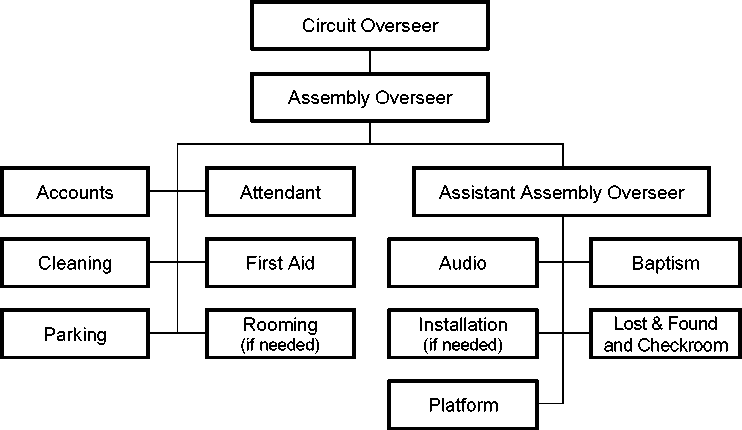

April 2017
© 2017
Watch Tower Bible and Tract Society of Pennsylvania
English (S-330-E)
Table of Contents
Chapter Paragraphs
Role of Assembly Overseer and Assistant Assembly Overseer
Role of Department Overseers and Assistants
Communication With the Branch Office
Alternative Arrangements for Attending Circuit Assemblies
Table of Contents
Chapter Paragraphs
Site Inspection of Commercial Facilities
Chapter One
1. The Scriptural themes developed at circuit assemblies are spiritual food prepared by “the faithful and discreet slave.” (Matt. 24:45-47) Such timely instruction strengthens our brothers and gives them the opportunity to widen out in their Christian association. (2 Cor. 6:11-13) We have every reason to work diligently toward having the assemblies be well-organized occasions.
2. Your willingness to be used as part of the assembly organization is appreciated. (1 Tim. 4:10) To help you care for your responsibilities more effectively, we are pleased to provide Assembly Organization Guidelines (S-330). We encourage you to become thoroughly familiar with the principles and guidelines found herein. Faithfully adhering to these instructions while displaying love and kindness will contribute to a smooth-running circuit assembly, will bring joy to you and others, and will honor Jehovah, the God of order.—Gen. 6:22; Ex. 40:16; Num. 1:54; 1 Cor. 14:33, 40; 1 Pet. 5:2, 3.
3. Assembly Organization Guidelines is the property of Watch Tower Bible and Tract Society of Pennsylvania and is for the use of each appointed circuit overseer, substitute circuit overseer, Assembly Hall overseer, assistant Assembly Hall overseer, assembly overseer, assistant assembly overseer, department overseer, assistant department overseer, and safety brother(s). This material may not be reproduced except for the persons noted above. Before each assembly, the assembly overseer should confirm that all those involved with assembly organization have the latest version of Assembly Organization Guidelines.
4. The circuit overseer is responsible for the operation of the assembly organization. The assembly overseer and the assistant assembly overseer will cooperate with the circuit overseer in directing circuit personnel as they carry out their work.—See Appendixes A and B.
5. The circuit overseer is responsible for the appointment of assembly overseers and assistant assembly overseers. Although no appointment letters need to be generated, the circuit overseer should inform the Service Department of the appointment by means of the Notification of Appointment or Deletion (S-2) form. If the circuit overseer recommends that a brother be replaced, he will kindly explain to him the reason.—Matt. 7:12.
6. The circuit overseer should maintain a balanced view of his oversight of assembly organization. It is not necessary for each successive circuit overseer to rearrange assembly organization if it is functioning well. Every effort should be made to help assigned brothers to improve in their abilities. He should also be sure to provide an updated assembly organization roster to all overseers whenever changes are made. The roster should include the name, date of birth, mailing address, e-mail address, telephone number, and congregation of the assembly overseer, assistant assembly overseer, department overseers, and assistant department overseers.
7. The assembly overseer and the assistant assembly overseer are to work closely with the circuit overseer in caring for assembly organization and should thoroughly understand their responsibilities. This will contribute toward the smooth operation of the assembly and will allow the circuit overseer to concentrate primarily on the program. Brothers will not serve as assembly overseers or assistant assembly overseers when they reach 80 years of age.
8. The assembly overseer has been assigned oversight of the departments. To help him care for this responsibility, the assistant assembly overseer will directly oversee the work of some of the departments. While each brother is to show initiative in matters under his control, regular consultations with each other will result in good cooperation between the departments. (Prov. 13:10) These brothers should be known as spiritual men who follow Bible principles in dealing with others. This is important, since others will look to them as examples. If problems develop, the assembly overseer and the assistant assembly overseer should help the brothers in a mature, kind way so that peace and unity are maintained. (1 Pet. 4:8-10) By humbly working together, they will give the circuit unified direction and arrangements will function smoothly.
9. Although department overseers have the responsibility to organize their departments, the assembly overseer and the assistant assembly overseer should know the status of all departments under their direct oversight two to three months before the assembly. If a department is understaffed, the department overseer should be helped to correct the situation.
10. On the day of the assembly, the assembly overseer and the assistant assembly overseer should personally visit the departments they directly oversee. They will look for areas where they can give commendation and help the brothers to improve their departmental operations. If one of them observes a problem in a department he does not directly oversee, he should bring it to the attention of the other brother. If immediate attention is needed, the one observing the problem should take the appropriate action and thereafter inform the other brother as soon as possible.
11. The following chart outlines how oversight of the departments will be cared for by the assembly overseer and the assistant assembly overseer.
12. Assembly overseers and assistant assembly overseers should not be asked to notify congregations of assemblies, inform pioneers of the special meeting before the circuit assembly, distribute talk outlines, preside at rehearsals, or gather information for Pioneer Service Schools. These responsibilities should be cared for by the circuit overseer.
13. The circuit overseer selects qualified brothers to serve as department overseers and assistants. The assembly overseer and assistant assembly overseer as well as other experienced brothers in the circuit may offer suggestions as to who could be used, which the circuit overseer will greatly appreciate. (Prov. 15:22) A rooming overseer and an installation overseer should be appointed only if the circumstances merit such. (See 3:60-65, 8182.) The circuit overseer may assign two assistants to some departments for training purposes, where practical. He should select the most qualified brother for each assignment, realizing that each brother has different gifts. (Rom. 12:3-8) Those selected must be less than 80 years of age and have the time required to fulfill all aspects of the assignment. The same Scriptural qualifications for oversight in the congregation apply to assembly oversight. Overseers should be able to give direction and instructions in a loving manner. They should display the fruitage of the spirit at all times. They should take the time to observe those working under their oversight and freely commend them for their efforts.—Ex. 18:21; Gal. 5:22, 23.
14. When selecting an elder to serve as a department overseer or assistant, it is usually not necessary to seek the comments of his Congregation Service Committee. If a brother’s qualifications are later questioned, the circuit overseer can decide whether the brother should continue to serve. In the rare event that no qualified elders are available to serve as a department overseer or assistant, a well-qualified ministerial servant may be used. Unbaptized publishers may volunteer to work but cannot have positions of oversight. To avoid giving a wrong impression, a father and son should not be selected to serve as the accounts overseer and assistant.
15. If deemed necessary and practical, it may be advantageous for the circuit overseer to have a brief meeting with the personnel in charge of selected departments in advance of an assembly. This could be done in the first year a circuit overseer serves in that circuit or the first time a facility will be used. The circuit overseer may ask the assembly overseer and assistant assembly overseer to share in the meeting, perhaps presenting information related to the departments they directly oversee. On other occasions, it may be sufficient for the circuit overseer to meet only with the assembly overseer and his assistant. In any case, all should be aware of their assignments and be properly prepared to care for their responsibilities.
16. Training: The circuit overseer, assembly overseer, and assistant assembly overseer, along with department overseers, should be conscious of training others, especially younger men who have potential and who are reaching out. Progressive training may include serving as an assistant department overseer and then as a department overseer. When necessary and at an appropriate time, the circuit overseer should discuss with the assembly overseer and his assistant anything relative to local organization that needs attention, such as any department functions that need to be improved.
17. Where deficiencies are seen, try first to assist a brother whenever possible. However, if a change needs to be made in department oversight, the circuit overseer should—in a kind manner—personally inform the brother of the adjustment and the reason for it.
18. On the day of the circuit assembly, the circuit elders will gather to consider financial matters and other matters pertaining to the circuit. (See Instructions for Circuit Accounting [S-331] for detailed direction on matters to be considered.) The assembly overseer will preside at these meetings. Any elder should be allowed to ask questions or express a comment. However, with good planning, communication, and cooperation between the accounts overseer and the assembly overseer, these meetings generally do not need to be lengthy.
Chapter Two
1. The circuit overseer serves as chairman of the circuit assembly. He takes the lead in arranging for the program, assigning speakers and session chairmen, caring for rehearsals, approving announcements, and so forth. —See 2:2-3.
2. The content of announcements must be reviewed and approved by the circuit overseer. Except in cases of extreme emergency, announcements should be made only during scheduled announcement periods.—See Chapter 3, paragraph 39, regarding baptism announcements at locations with limited space around the baptism pool.
3. No announcements should be made regarding chewing gum in the auditorium. Whether or not eating is allowed in the auditorium depends greatly on the facility’s design and usage.—See Chapter 4, paragraph 19, regarding announcements about food and drink at Assembly Halls.
4. Questions regarding assembly organization should be directed to the Convention and Assembly Desk in the Service Department. The Report on Circuit Assembly (S-318) should be submitted by the circuit overseer immediately following each assembly (or series of assemblies if the circuit is divided into sections). If the circuit overseer determines that there is a need to report any difficulties in connection with the functions of the assembly, such as with the platform, the sound, the video, the stage, the lighting, or the facility itself or if he has observations, suggestions, or outstanding experiences to share regarding the facility or functions of the assembly, he is welcome to send a separate brief report to the Convention and Assembly Desk.
5. If the facilities were crowded, the circuit overseer may wish to consider with the assembly overseer, the assistant assembly overseer, and other mature elders in the circuit the possibility of dividing the circuit into A and B sections for future assemblies. The circuit overseer should then call the Convention and Assembly Desk as soon as possible to discuss the matter. If approved, he will be asked to submit a written request. It may be possible for the request to be handled before the schedules for the next service year’s assemblies are made.
6. The Convention and Assembly Desk may be contacted at the following address and telephone number, Monday-Friday, 8 a.m.-5 p.m. [Time zone].
[Corporation name]
ATTN: Service Department—Convention and Assembly Desk [Street address]
[City, province or state, zone or code]
[Phone number]
[Fax number]
[E-mail address]
7. Branch Risk Management Desk: The following is provided so that the circuit overseer may communicate with the Branch Risk Management Desk in the Accounting Department regarding insurance, accidents, and related matters.
[Corporation name]
ATTN: Accounting Department—Branch Risk Management Desk [Street address]
[City, province or state, zone or code]
[Phone number]
[Fax number]
[E-mail address]
8. Most forms and letters are posted on jw.org for downloading and printing. Two elders, perhaps the assembly overseer and the assistant assembly overseer, should serve as local domain administrators. When a brother is appointed to serve in one of the positions listed on the JW.ORG Circuit Domain Roles (S-334) form, he should be informed that he will need to provide his user code to the domain administrator to be added to the domain and receive the appropriate roles.
9. Only the department overseer should be given access to the circuit domain. No ministerial servants should be given access to any part of the circuit domain. If a department overseer is not able to access the materials he needs by means of jw.org, then the assembly overseer or the assistant assembly overseer (whoever is responsible for that department) should make arrangements for him to receive the assistance needed.
10. Please read the “Help” text on jw.org and endeavor to obtain local help on technical issues related to accessing jw.org before calling the branch office Help Desk for assistance. Reviewing the principles provided for all bodies of elders regarding the use of jw.org will be helpful as well.
Questions related to the forms or letters posted on jw.org should be directed to the Convention and Assembly Desk in the Service Department.
11. No spotlights or special lighting may be used during the assembly program unless directed to do so by the branch office. The circuit overseer should determine in advance if the available stage lighting is adequate. If it is not adequate, the Convention and Assembly Desk in the Service Department should be contacted for direction. House lights should not be dimmed.
12. Proper dignity and a quiet working environment should be maintained in all assembly departments. Only necessary personnel should remain at a department’s location during the program. This is especially important when departments are located in corridors.
13. A megaphone and a large flashlight should be accessible near the platform in the event the lighting or sound system fails.
14. An emergency preparedness plan should be developed by the assembly overseer, his assistant, and the attendant overseer. The plan should be reviewed and approved by the circuit overseer. If the facility management has an emergency preparedness plan, it should be used as the basis for the assembly’s plan, making adjustments as needed. The plan should include evacuation procedures and a listing of telephone numbers for emergency services in the area.
15. The circuit overseer and the assembly overseer should obtain approval from the Convention and Assembly Desk in the Service Department before renting or purchasing equipment, such as baptism pools. The Convention and Assembly Desk may already have a source for such equipment or may have guidelines for standardizing such equipment. In some cases, it may be possible to borrow equipment rather than renting or buying it. When multiple assemblies are held at the same facility, it may be possible to share equipment. Equipment should be stored for reuse wherever this is practical. All purchases of materials and supplies should be approved by the assembly overseer.
16. To prevent theft or loss of expensive equipment and supplies, do not leave such items in the facility all night or during the interval between assemblies unless the items are secured at all times. (See 3:29.) To avoid problems with contract negotiations, requests to the facility management for equipment, supplies, or services not included in the contract should be made only through the circuit overseer or a brother he has assigned.
17. Extensive preassembly work is usually not necessary, especially if the same facility is used regularly for assemblies. However, limited preassembly work, such as setting up departments, installing and testing sound equipment, and cleaning the facility, is usually necessary. This work should be well-planned and organized. Volunteers participating in preassembly work should care for their own food needs. Encourage modest dress and grooming.
18. Safety is a priority and must be taken seriously. The circuit overseer, assembly overseer, assistant assembly overseer, department overseers, and assistant department overseers should be familiar with the direction regarding safety contained in this section and elsewhere in Assembly Organization Guidelines (S-330).—See 3:8, 11, 40, 44.
19. Department overseers are to make assignments in accord with a volunteer’s ability and experience and should convey safety measures and policies to those in their departments prior to the assembly.
20. Most accidents occur on stairs, while loading and unloading trucks, and while moving materials. A sufficient number of volunteers should be used to move materials safely. Mature brothers should be assigned to move trash, equipment, and other items very carefully so as to avoid accidents. Persons using knives, power tools, and machinery especially need to be safety conscious, using any necessary protective equipment.
21. The circuit overseer should assign one or two capable, observant, and tactful brothers to identify and help resolve potential safety hazards. These brothers may be included in meetings that are held with department overseers and should be given a copy of Assembly Organization Guidelines (S-330).—See 1:15.
22. During the assembly, the safety brother(s) will work with the assembly overseer and his assistant as well as the appropriate department overseers to address safety hazards. The safety brother(s) should regularly check the facility, parking areas, sidewalks, and assembly operations. Unsafe situations could include trip hazards, water spills, uneven cracks in the floor or stairs, loose or missing handrails, loose ceiling plaster or concrete, and so forth.
23. Property damage caused by assembly personnel or attendees should be reported on the Incident Report (TO-5). The completed form should be reviewed by the circuit overseer and sent to the Branch Risk Management Desk in the Accounting Department. A copy of the form should be retained in the circuit file for one year. In the event of property damage or loss, no assembly personnel should agree to any settlement or commitment unless directed to do so by the branch office.
24. A ventilated room or enclosed area should be arranged for mothers to care for their babies. This room should be conveniently located and equipped with chairs, tables, program sound, and, if possible, restroom facilities.
25. Special sections or rooms cannot usually be provided for individuals who are claustrophobic or seriously ill or who have chemical sensitivities. Circuit overseers should contact the Convention and Assembly Desk in the Service Department before making exceptions, keeping in mind what is in the best interests of the majority of attendees.
26. Special parking for assembly oversight is not necessary. However, the assembly overseer could reserve a few parking spaces for assembly operation in addition to those for the disabled.
27. The circuit overseer will take the lead in extending hospitality to the branch representative. (Heb. 13:2) He should communicate with the branch representative well in advance and make appropriate arrangements for his accommodations. To assist the branch representative with his travel arrangements, the circuit overseer should provide the following, as applicable:
• His permanent address
• A phone number where he or a responsible local brother (such as the assembly overseer) can be reached should there be lastminute changes, such as in travel plans
• Information about the airport nearest the facility being used
• How much travel time is required from the airport to the branch representative’s accommodations and/or the facility being used
28. If circumstances allow, the circuit overseer or a responsible local elder from the circuit being served should meet the branch representative personally on his arrival, take him to his accommodations, and provide for an evening meal if needed. (See 3:82.) It is the responsibility of the circuit overseer to see that the branch representative’s needs are cared for. Other needs that should be cared for during the weekend include providing adequate but simple food items for breakfast and the noon meal each day. It would also be a kindness to be sure there are evening meal arrangements in place for the branch representative if necessary. The circuit overseer or the local responsible brother should take the branch representative to his transportation for the return trip.
29. The assembly overseer’s use of circuit funds to reimburse the travel expenses of the branch representative is considered a normal operating expenditure and does not require a resolution.—See Instructions for Circuit Accounting (S-331).
30. There is no need for a Volunteer Service Department to be established at circuit assemblies. Each department is responsible to recruit its own volunteers well before the assembly. Volunteers must be at least 16 years old to serve alone; otherwise, they must serve in an assignment appropriate to their age and experience with a parent or an adult. Sisters, unbaptized publishers, and undocumented aliens should not be used in positions of oversight or to give direction to others. As long as good judgment is used, there is no objection to wives serving in the same department as their husbands. Volunteers should be approved by the elders of the congregation they attend. All volunteers should be treated with love and Christian kindness.
31. Regular Pioneers: If a regular pioneer is needed for preassembly or postassembly work, the assembly overseer may grant him hour credit toward his monthly goal. Pioneers should not be allowed to count time for assembly work during the days they attend their own assembly. This arrangement should be explained to any regular pioneer invited to serve. Care should be taken so that this provision is not abused.
32. Special Pioneers: Special pioneers are not to be taken from their assignment without good reason. Requests to use special pioneers for preassembly or postassembly work should be made by the circuit overseer and directed to the Convention and Assembly Desk in the Service Department. This should be done prior to inviting them to serve. The request for a special pioneer should include his name, the dates he is to serve, the reason he is needed, and the assignment planned for him. Thereafter, the circuit overseer would contact the special pioneer, offering the assignment and informing him that the branch office has given approval if he is in a position to accept. A special pioneer approved by the branch office to do preassembly or postassembly work may submit any related travel expenses to the circuit. The circuit would not care for any rehearsal expenses for a special pioneer participating on the assembly program.
33. There is no arrangement for distributing literature at assemblies.
Chapter Three
1. To ensure that donated funds are handled properly, at least two brothers from the Accounts Department should be present when funds are collected, processed, and deposited. The brother assigned as the accounts overseer should be a well-qualified, trustworthy elder who is able to comprehend and follow detailed instructions.—For further direction on accounts, see Instructions for Circuit Accounting (S-331).
2. Well in advance of the assembly, the attendant overseer and his as-sistant(s) should meet to discuss the instructions in this subheading, Assembly Attendant Instructions (S-176), any local facility requirements, and arrangements for recruiting attendants.—See 1:9.
3. Attendants should be mature, experienced brothers, preferably elders or ministerial servants, who demonstrate good judgment. They should be alert, courteous, kind, and properly dressed and groomed. Attendants under 20 years of age should be ministerial servants. Well in advance of the assembly, the attendant overseer should provide each attendant with a copy of Assembly Attendant Instructions.
4. All attendants must wear an attendant badge for identification. The words “security” or “guards” should not be used regarding any volun-teers—they are “attendants” or “watchmen.”
5. On the morning of the assembly, the attendant overseer will hold a meeting with all attendants before the doors are opened to the public. During this meeting, reminders from Assembly Attendant Instructions and from this subheading should be reviewed. This should include describing how an attendant can kindly remind any who are not seated during the musical preludes to find their seats and quietly enjoy the presentation. He should also review emergency procedures so that all attendants will know their duties in the event of an evacuation or other emergency, including how to make immediate contact with the First Aid Department and the attendant overseer or his assistant.—See 2:14.
6. Some attendants should be on hand when assembly personnel arrive for work assignments before the doors are opened to the public. To assist with seating and crowd control, a sufficient number of attendants, especially those posted at the entrances, should be at their assigned locations at least 15 minutes before the doors are opened to the public. If necessary, attendants may be assigned to serve in shifts. The attendant overseer should arrange
for two brothers to be posted at the entrance door to the Accounts Department at all times.
7. Directories: The assembly overseer will provide the attendant overseer with a sufficient supply of simple directories showing the location of all assembly departments other than areas dealing with accounts. Copies should also be provided to the circuit overseer and all other department overseers as needed. The attendant overseer will provide a directory to any attendant not familiar with these locations. Directories should not be provided to attendees in general.
8. Escalators, Stairs, and Elevators: Escalators and stairways should have attendants assigned at the top and bottom of each level to supervise their use and assist anyone needing help. Assigned attendants should know how to stop the escalators in an emergency. When allowed by the facility management, attendants should operate elevators in order to maintain the orderly movement of attendees and to ensure proper supervision.
9. Seating: The circuit overseer and the assembly overseer will determine what sections of seating will be used, taking into consideration the estimated total attendance, including the percentage of disabled, elderly, and infirm ones. Avoid using sections in upper levels and behind the stage if they are not needed. The circuit overseer and the assembly overseer may decide to open these sections later if the attendance is greater than expected. All sections that are likely to be used should be opened simultaneously at the start of the day. This will avoid overcrowded seating and allow attendees to choose their preferred seating location. At least two attendants should be assigned to all seating sections, one at the front and one at the back.
10. The Attendant Department will reserve a section of seats in front of the platform for baptism candidates. The attendant overseer and the baptism overseer should make these arrangements.
11. For safety reasons, baby strollers and lawn chairs may not be used by attendees in general. However, if allowed by the secular authorities and the facility, strollers and lawn chairs may be used for disabled children and adults, but only in a section reserved for the disabled.
12. Adequate seating, including space for wheelchairs, should be reserved for the disabled, the infirm, and those 65 years of age and older. Signs may be used to identify these special sections. These sections may include some floor seating, the first few rows up from the floor, or seating near the corridor where attendees enter the seating area. To the extent possible, these seats should provide a clear view of the stage and easy access to restrooms. Persons directly assisting the disabled, elderly, and infirm may sit with or near them. Prior to the assembly, each assigned congregation should be informed which rows or sections will be reserved.
13. Attendance Count: To ensure uniform attendance figures, the count should be taken simultaneously at a time that will have the highest attendance for that session as determined by the circuit overseer. The attendant overseer should provide the attendance figure for each session to the assembly overseer and the circuit overseer so that an announcement can be made at the end of each session.
14. Dealing With Difficulties: Attendants should be assigned to monitor and control access to the stage at all times that the building is open to the public. This should be done in a way that is not distracting to the audience.
15. Please note the following information with regard to disruptive individuals:
• It is best to ignore trivial or minor disturbances created by individuals. However, if someone persists in this course of action and is distracting others, he should be asked to leave. If the disruptive individual refuses to leave, you should inform him that if he does not leave and continues to distract others, you will contact the police. If the individual does not cooperate, the police or the facility security personnel should be called. When the police arrive, they may be informed that the individual is causing a disturbance and that his implied invitation to attend the assembly has been revoked. The police may also be informed that we are willing to file trespassing charges if it seems prudent and necessary under the circumstances.
• Attendants wisely avoid being provoked into physically removing a disruptive person from the premises, as the individual may be attempting to create a basis for legal action. Thus, the attendants should generally not try to remove a disruptive individual forcibly from the facility. If an individual is violent from the outset, the police or the facility security personnel can be called immediately. There is no need to warn him. In the event that a person is physically attacked, that person has the right to defend himself from harm and the attendants should do what they reasonably can to help protect the individual. If those who are being physically attacked are unable to flee from an assailant who appears determined to cause injury, a Christian may try to ward off such attacks and even strike out in defense if necessary. Of course, any such defensive action would solely be to protect oneself or others from the attacker until the police arrive. —g 6/08 p. 11; g87 11/22 p. 28.
16. At times, children or others may set off a fire alarm. If this is likely to occur, an attendant should be stationed beside each fire alarm pull box in the areas of the building included in the contract and remain there during the time the building is open to the public.
17. If a nonmedical emergency arises, attendants should immediately contact the attendant overseer or his assistant for direction. The attendant overseer or his assistant should immediately inform the assembly overseer or the assistant assembly overseer, who will in turn inform the circuit overseer. In case of a medical emergency, attendants should immediately notify the First Aid Department so that first-aid personnel can render assistance and call emergency services if necessary.
18. Watchmen: If necessary, the Attendant Department will provide qualified, spiritually mature brothers to serve as night watchmen, primarily to secure our equipment. The facility personnel on duty should be notified of any authorized watchmen who will be in the building after it is se-cured.—See 2:16; 3:29.
19. Since night watchmen will likely miss much of the program, the circuit overseer may decide to recruit qualified brothers who are assigned to attend other assemblies. In this way, these brothers can attend their assigned assemblies with their families.
20. Prior to the assembly, the audio overseer and the platform overseer should closely review the Circuit Assembly Platform Layout (S-343) together. Good-quality transmission of the program throughout all the seating areas is vital in order for the audience to understand and benefit from the spiritual program. Although the audio overseer may be more familiar with the technical aspects of the work than are the circuit overseer and assistant assembly overseer, he should maintain good communication to ensure that any major decisions have the approval of the circuit overseer. When a facility is used for multiple assemblies, the audio overseers and the technicians should share technical information with each other, including the optimum equipment settings for the facility. Representatives of the Audio Department should be present when the circuit overseer conducts program walk-throughs.
21. The audio overseer and members of the Audio Department should regularly evaluate the sound quality by sitting in different locations to listen to the program. Music and speech should be equalized separately so that the quality of recorded presentations is maintained.
22. It is generally best for the audio mixer and related equipment to be located in the general seating area, rather than at the edge of the stage. This allows the brothers operating the equipment to see the stage and hear the program as the audience does. However, so as not to create a distraction, only the brothers assigned to operate the equipment should be at that location.
23. By the end of the move-in day, all audio equipment should be installed, tested, balanced, and checked for proper coverage so that there will be good audio from the start of the assembly. Except in cases of emergency, nothing should be broadcast over the audio system before the session chairman’s introductory comments.
24. Audio quality may be affected by a malfunctioning house audio system or by facility problems, such as buzzing light ballasts or transformers. It is preferable to try to correct such problems before requesting or installing additional equipment. The circuit overseer or a brother assigned by him may approach the facility management to request that the facility management repair or allow us to repair such equipment well in advance of the assembly.
25. Prerecorded musical preludes are provided for use at the start of each session. These are part of the program. The purpose of these preludes is not to provide background music for conversations and association. The prelude is considered part of our worship, similar to the singing of the assigned songs at these events. Hence, the volume should be at a higher level than the volume of the background music that congregations play before and after their weekly meetings. The prelude music should initially be loud enough to be heard clearly over the conversations that have been in progress. As the audience settles into their seats and listens to the music, the volume may be lowered to an appropriate level for the now quiet and attentive audience.
26. Video: If video equipment is installed at the facility, it may be used to display the program, song lyrics, and the theme and yeartext. The audio overseer and those assisting him should regularly evaluate the video quality by watching the camera framing, angles, and transitions during the program. During musical preludes and prayers, a wide shot of the stage should be shown unless otherwise specified.
27. During the entire baptism talk the speaker should be shown. Unless it is a sign-language assembly, the baptismal candidates should not be shown when they are asked to stand or when the questions are answered. However, it is permissible to pan the candidates when they exit the main seating area after the song. At sign-language assemblies, it is permissible to show a wide shot of the stage, including the first few rows of the audience, during the time the baptismal candidates are asked to stand and when the questions are answered. Thus, the baptismal candidates and at least a partial view of their positive response would be seen from behind. At all assemblies, the immersion of baptismal candidates should be displayed for the audience to view if the equipment allows. At times, it may be necessary to cut to a different shot to avoid embarrassing situations. For example, if someone is having difficulty entering or exiting the pool or if an emergency arises, the shot should be changed. Discernment should be used when deciding what should be shown on the video system.
28. Interpreted talks have unique circumstances that vary depending on the location and the number of languages being interpreted. In general, the audience should see a full-screen shot of the speaker. When an interpreter is standing next to a brother delivering a talk, both brothers should be shown in the initial shot for a few seconds. This allows the audience to understand that the talk is being interpreted. Since scriptures will often be read only by the interpreter, a full-screen shot of the interpreter should be shown as the scriptures are read, if possible. For the rest of the talk, only the speaker should be shown. If the interpreter is in a different auditorium, on a separate stage, or seated at a table, the interpreter should not be shown onscreen. At sign-language events, a picture-in-picture format should be used for talks, if technically possible. The interpreter should be shown full-screen, and the speaker should be shown as an inset that occupies about one quarter of the screen.
29. Equipment: Audio, radio, telephone, or video equipment should not be rented or purchased without the approval of the branch office. At times, such equipment as microphones and microphone stands can be borrowed from Kingdom Halls or other local sources. The audio overseer should ensure that equipment is secure at all times, especially overnight and between assemblies.—See 2:16.
30. Although we do not generally install corridor audio equipment, if there is preinstalled corridor audio equipment in the facility, it may be used for volunteers in departments located outside the general seating area. In some cases, the FM transmission for the hearing-impaired may be sufficient for these departments to receive the program through an FM radio.
31. FM Transmission for the Hearing-Impaired: If there is an FM transmitter already available at the facility, the Audio Department is responsible to transmit the program for the benefit of those who are hearing-impaired. Such ones should be encouraged to bring a small FM radio and earphones to the assembly. The Audio Department should provide the circuit overseer with the FM frequency(ies) that will be used so that this information can be included in the session chairman’s introductions.
32. Recordings: Recording devices used by those in attendance should not be connected to the audio or video systems. Any requests for AM or FM broadcasting beyond what has been previously described should be submitted to the Convention and Assembly Desk in the Service Department.
33. Branch offices provide video recordings of current assemblies in many languages for playback on JW Stream. However, if no recording is available on JW Stream, the Audio Department may make an audio or video recording of the program for use by those with limiting circumstances.
34. The baptism overseer is responsible for all baptism arrangements, such as direction to the candidates, dressing room needs, and transportation to the baptism site if necessary. He should remind the attendant overseer to reserve a seating section for the baptism candidates and assign attendants to care for crowd control around the pool. The baptism overseer should also contact the first aid overseer to ensure that at least one licensed or certified representative from First Aid is present for the baptism. The baptism overseer should examine the baptism site each time prior to use to verify that conditions are appropriate. This is especially important if the baptism will take place off-site. He should make sure in advance that the water temperature will be at a comfortable level at the time of the baptism.
35. Dressing rooms should be arranged to allow for modesty while candidates change into their baptism attire. At least two mature volunteers should be assigned to each dressing room to render assistance and watch the belongings of those being baptized. These volunteers should assist candidates wearing immodest bathing suits to correct the matter before leaving the dressing room. Appropriate precautions, such as caring for wet floors around the baptism pool, along the path from the pool to the dressing rooms, and in the dressing rooms, must be taken to ensure safety.
36. In most cases, only baptism candidates should sit in the section reserved for them. However, it is permissible for a disabled candidate to be joined by someone assisting him. Microphones should not be used to amplify the answers given by the candidates. The candidates will remain for the singing of the concluding song and file out afterward, following the direction of the attendants.
37. Those performing the baptism should be elders whose appearance is exemplary. They should wear plain white T-shirts and modest bathing suits. It is best that brothers with visible tattoos not be used. As candidates are lowered into the water, it is best to have them hold their nose with one hand and their wrist with the other hand, bend their knees, and lay backward. This reduces the chances of having to submerge the candidate again because part of his body came out of the water. Only one brother should be used to baptize the candidate unless circumstances require having another person assist him. Candidates are to be baptized individually. They should not be allowed to hold hands with other candidates as they are baptized. Candidates should not be allowed to pose for photographs while in the pool either before or after being immersed.
38. Congregations should not be asked to provide a list of candidates’ names to the Baptism Department. However, an inquiry may be made to congregations to determine if there are any disabled or infirm candidates who will need special assistance. Candidates should not be asked if they are being rebaptized or if they have been approved by the elders for baptism. The baptism overseer should ensure that a count is made of all who get baptized and should give this figure to the circuit overseer.
39. At some facilities, there may be limited space around the baptism pool, making it difficult for family and friends of baptism candidates to view the baptism. In such cases, the Baptism Department may be allowed to announce a candidate’s congregation just prior to his baptism. When all from a particular congregation have been baptized, the next congregation will be announced and those wishing to view the next group of candidates can take their place. The circuit overseer will determine whether such an announcement is necessary and practical.
40. Candidates With Communicable Diseases: If a candidate with a communicable disease presents himself for baptism, the baptism overseer and the circuit overseer (along with the coordinator of the body of elders and, if possible, another elder from the candidate’s congregation) should meet with the candidate and explain the following options available to him. The brothers performing the baptism should be informed of the health issue. This will allow them to make a personal decision as to whether they feel there would be a risk that they would be unwilling to take.
• The candidate may attend the circuit assembly, listen to the baptismal discourse, and then be taken to a body of running water to be baptized.
• The candidate may attend the circuit assembly, listen to the baptismal discourse, and then be baptized in his hotel or motel room or in a private home where there is a large tub that can be used for this purpose.
• If the candidate is sensitive about his situation and does not want others to become aware of the fact that he has a disease, he may attend a convention or circuit assembly to which his congregation is not assigned, listen to the baptismal discourse, and then be baptized in a body of running water.
• The candidate may request that the elders arrange for him to have a private baptism at the local congregation.
41. The Cleaning Department is responsible to ensure that the assembly site maintains a high standard of cleanliness that reflects favorably on Jehovah’s name. (Lev. 20:26) The assembly site is a place of pure worship, and those who supervise this department should understand the importance of keeping the site clean. The brother assigned as department overseer should be well organized and should be a good communicator. It is important to select dependable volunteers and to explain assignments clearly.
42. Assignments: Congregations can be assigned to clean specific seating sections in the auditorium, corridors, offices, restrooms, exterior grounds, and so forth. The Cleaning Department should write the congregations in advance to indicate their cleaning assignment and to provide any needed instructions.
43. If the building requires preassembly cleaning, the assembly overseer will make arrangements with the cleaning overseer to see that this is accomplished. The Cleaning Department should write a letter inviting congregations to support this activity.
44. When cleaning at the conclusion of the day’s program, remind cleaning personnel to be considerate of any who are visiting with others. Assemblies are occasions for brothers ‘to encourage one another’ and enjoy spiritual fellowship, especially with those they may not see regularly. (Heb. 10:24, 25) Thus, we do not expect that everyone will immediately leave the auditorium after the concluding prayer. Often, the cleaning can be accomplished by working around those who are enjoying Christian fellowship. If any need to be asked to move to allow for cleaning in a certain area, the cleaning personnel should do this in a loving manner. If the need arises to clean a portion of the floor, such as in the case of a spill, precautions should be taken to reduce the risk of slipping and falling.
45. Cleaning and Restroom Supplies: It is preferred that the contract stipulate that the facility management will provide cleaning and restroom supplies. If so, the Cleaning Department should use the supplies provided by the facility and not purchase additional supplies. If possible, the supplies should be stored in a locked room. The supplies should be inventoried at the beginning of the day. If additional supplies are needed, the circuit overseer or a brother assigned by him should request these from the facility management. At the conclusion of the assembly, any remaining supplies should be inventoried and the total used should be provided to the circuit overseer.
46. Volunteers should be conservative when using restroom cleaning supplies. Cleaning equipment should be cleaned and properly stored.
47. Restrooms: Volunteers who clean restrooms should be trained by the department overseer or his assistant(s) on the proper use of chemicals. Gloves designed for protection against germs and chemicals should be made available to these volunteers.
48. Each restroom is to be checked regularly by an assigned monitor to (1) restock paper goods and soap, (2) check for spills and plumbing failures, and (3) make sure children are not playing in restrooms. Any problems should be reported to the cleaning overseer.
49. Trash Disposal: It is preferred that trash disposal be included in the contract. If the facility does not have sufficient refuse containers, the assembly overseer will arrange for these. Those assigned to pick up the trash can liners should be reminded to exercise caution so as to avoid injury from sharp objects.
50. Recycling and Deposits: Soda cans and plastic bottles should be recycled if required by law. Where can or bottle deposits are offered, these should be redeemed if practical. Separate containers for disposal of recycla-bles should be used for this purpose.
51. The purpose of the First Aid Department is to administer only emergency first aid until the individual can be placed under the supervision of local health-care professionals. This limited function does not include diagnosing or treating chronic illnesses, administering treatment such as chiropractic adjustments, or providing other medical care—all of which could expose the branch office and the circuit and its volunteers to malpractice lawsuits. This caution should be explained to brothers and sisters serving in First Aid.
52. Personnel: Only adults may serve in the First Aid Department. Where possible, the department should be sufficiently staffed with healthcare professionals, such as physicians, nurses, paramedics, and emergency medical technicians (EMTs), when we are in the building, including during preassembly and postassembly work. It is preferred that only those who are licensed or certified in one of the above categories be used to respond to emergencies and, as needed, to call emergency services. First Aid volunteers should provide the First Aid overseer with a copy of their certification. Any medical professionals who volunteer to serve in First Aid do not represent the department if they choose to offer assistance beyond the limited departmental assignment already described. If someone decides to administer professional care at the assembly, he should understand that this is his own personal decision and responsibility.
53. Those not licensed or certified in one of the above categories may volunteer to assist in the First Aid Department in a supporting role. In an emergency situation, First Aid volunteers should give way to anyone more qualified. There is no need to make rounds looking for opportunities to render assistance. At least one licensed or certified representative from First Aid should be present at the baptism.
54. Confidentiality: First Aid volunteers should treat the details of situations cared for by the department, including any medical problems described, as confidential. These details should not be discussed with unauthorized individuals.
55. Room and Supplies: The First Aid room should be staffed to the degree possible by at least two persons at all times. The First Aid room should contain directions and/or a map to one or more nearby hospitals and directions to one or more locations where prescription and over-the-counter medications may be purchased.
56. No prescription drugs should be stocked in the First Aid Department. Only a licensed physician may carry and administer prescription drugs. A paramedic may carry prescription drugs and administer them under the direction of a licensed physician. The department should have a small supply of pain relievers, bandages, disinfectants, feminine hygiene items, and so forth, for accidents, emergencies, or other minor needs. Individuals should be allowed to select what they need from the items available. They should be encouraged to obtain items from a local source in the future.
57. No uniforms are to be worn by First Aid volunteers. Oxygen should not be brought to the facility for First Aid use. However, if oxygen is on the premises, only a licensed physician, registered nurse, paramedic, or certified EMT should administer it. The taking of blood pressure, when deemed necessary in caring for an emergency, must be done by someone licensed or certified to do so. When handling cases such as seizures and when administering CPR, procedures should be followed to protect both parties from the transmission of disease. Automatic external defibrillators should not be brought to the facility for First Aid use. However, if any are on hand in the facility, someone trained to use this equipment must be on duty at all times in the First Aid Department.
58. Some cots or beds should be set up in First Aid for emergency use only. The cots should be screened off or located in an adjacent room so that they are not visible to those entering the department. A reasonable time limit should be placed on the use of the cots. Coverings on cots and pillows should be changed after each use. Disposable paper pillowcases and sheets may be obtained for this purpose. One or two wheelchairs should be available for temporary emergency needs.
59. Emergencies: Where possible, an ambulance or a similar emergency service should be on call rather than on-site. If someone needs more than basic first aid, it should be recommended that he be transported to the hospital. If the individual is in agreement, First Aid may call emergency services and should arrange for someone to meet them upon their arrival so that they can be escorted to the individual’s location. On the other hand, the individual may decide to have a family member or friend provide transportation. If the person refuses to be transported, First Aid may wish to consult with a close family member, if one is present, to explain why the person should seek medical help. If the person continues to refuse transport, then it is his own responsibility. However, the interaction should be recorded in an Incident Report (TO-5). As a reminder, an Incident Report should be completed for any incident that involved serious illness or that involved or nearly involved personal injury requiring medical treatment beyond minor first aid.
60. The Installation Department assists as needed with the setup, maintenance, repair, and move-out needs of the assembly. If construction or repair work is needed and allowed by the facility, it is the responsibility of the installation overseer to ensure that volunteers meet any requirements stipulated by the facility contract and local laws. An Installation Department would likely not be needed when the assembly is held at an Assembly Hall.
61. Signs: It is the responsibility of the installation overseer to ensure that necessary signs are on hand and properly installed. All signs should be approved by the assistant assembly overseer. Signs must be installed in a manner that does not mar or deface the building and should be removed at the conclusion of the assembly.—See 3:64.
62. Stage: The installation overseer(s) is responsible for the stage design. The design, including furniture and decorations, should be simple and tasteful, not distracting in appearance. To the extent possible, the stage should be high enough to have comfortable visibility for all. One or more large-faced clocks that are easily readable by the speaker should be placed on the platform. The design should be agreed upon by all circuit overseers using the same facility and reviewed with the audio overseer(s) to minimize technical issues.—See 3:20.
63. It is preferred that a stage platform be included in the contract. While the facility management may prefer to construct the stage platform, it is the responsibility of the Installation Department to decorate it. If the facility does not provide the stage platform, it is the responsibility of the Installation Department to construct it.
64. The Installation Department is responsible for designing and building the theme and yeartext signs. The theme and yeartext signs should have lettering large enough to be seen easily by all in the audience. Each year, the official wording for the theme sign is provided by the branch office on jw.org. Video monitors can be used to display the assembly theme and yeartext. The assembly theme and yeartext are to be displayed during the entire program.
65. If more than one assembly is scheduled at a facility, costs can be reduced if flowers and decorations are shared to the extent possible. After the last assembly, stage materials and decorations can be liquidated for a suggested contribution.
66. The Lost & Found and Checkroom Department should be staffed at all times the facility is open.
67. Lost & Found: Inexpensive items should be displayed. However, wallets, purses, and expensive items should not be displayed. Persons claiming them must be able to identify the items.
68. If individuals, particularly children, become separated from their group or parents, they should be brought to the Lost & Found and Checkroom Department. Sisters working in this department may be especially helpful in attending to lost children. No announcements regarding lost persons are to be made. The Attendant Department, the assembly overseer, and the circuit overseer should be notified of any such persons.
69. After the assembly, any remaining items should be held by the department overseer. If those who later inquire about an item can accurately describe it, the item may be forwarded to them at their expense. Unclaimed cash should be given to the Accounts Department at the conclusion of the assembly. Unclaimed items of significant value, such as expensive watches, rings, and cameras, should be held by the assembly overseer until the next circuit assembly. Thereafter, they should be exchanged for their monetary value and the proceeds deposited in the circuit account. Remaining unclaimed items can be disposed of locally at the discretion of the assembly overseer.
70. Checkroom: Checkroom volunteers should employ some means of identifying coats, luggage, packages, and other checked items. They should ensure that all checked items other than clothing have identification showing the owner’s name, congregation, address, and telephone number.
71. The Parking Department oversees all parking facilities controlled by the assembly and is responsible for the safety of pedestrians and vehicles in the parking area(s).
72. Parking attendants should be mature brothers, preferably elders or ministerial servants, who demonstrate good judgment. A brother under 20 years of age may be used as a parking attendant if he is a ministerial servant. The attendants should be alert, courteous, and kind. Enough parking attendants should be assigned so they can be rotated in shifts. Since some parking attendants miss parts of the program, the circuit overseer may decide to recruit qualified brothers who are assigned to attend other assemblies. In this way, these brothers can attend their assigned assembly with their families.
73. Each parking attendant should be given an assignment and a copy of Assembly Parking Attendant Instructions (S-177) well in advance of the assembly. The use of high-visibility safety vests is recommended.
74. If the assembly is not held at an Assembly Hall, the assembly overseer, the assistant assembly overseer, and the parking overseer should develop a parking plan. Well in advance of the assembly, each assigned congregation should be provided with a copy of the plan, which should show the recommended routes to the facility and parking location(s). This plan should also specify routes for entering and exiting the parking areas. A few legally placed signs may be used to direct drivers to and within the parking areas. The parking overseer and his assistant(s) should train all those working with them to follow the parking plan.
75. Prior to the assembly, the assembly overseer and the assistant assembly overseer should designate a drop-off area near a convenient facility entrance for the disabled, elderly, and infirm. If needed, a convenient location should also be selected for buses to drop off and pick up their passengers. We do not encourage the use of shuttles to transport attendees from the parking areas to the facility.
76. Before the parking areas open on the day of the assembly, the parking overseer should meet with all parking attendants. He should review the direction on handling disruptive individuals that appears in Chapter 3, paragraph 15, the parking plan, and Assembly Parking Attendant Instructions. He should also review the emergency procedures so that all parking attendants will know their duties in the event of an evacuation or other emergency, including how to make immediate contact with the First Aid Department and the parking overseer or his assistant. The meeting should conclude in time for all parking attendants to assume their assigned positions no later than 15 minutes prior to the opening of the parking areas.
77. The parking areas should be fully staffed prior to opening and until closing. In the morning and evening, when traffic is heaviest, a sufficient number of parking attendants should be stationed at each entrance and exit as well as throughout the parking areas to give proper direction to drivers. Throughout the assembly, the parking overseer and his assistant(s) should regularly visit and encourage the parking attendants.
78. Parking attendants will direct only those with government-approved placards or license plates for the disabled to park in spaces legally marked as reserved for them. According to the need, the assembly overseer, the assistant assembly overseer, and the parking overseer may designate additional parking areas for the disabled, elderly, and infirm. These areas should be included on the parking plan. A sufficient number of parking attendants must be assigned to these areas to ensure that only the disabled, elderly, or infirm park there.
79. Although fewer parking attendants will be needed between the morning and evening rush periods, a sufficient number should be assigned in pairs to monitor the parking areas regularly. Golf carts or other motorized vehicles should not be borrowed from facility management or rented from an outside source for this purpose. Parking attendants may use their personal vehicles or bicycles if the parking areas are large. The presence of parking attendants is a strong deterrent to vandalism and theft. If parking attendants observe such activity, they should immediately contact the parking overseer or his assistant for direction. The facility’s security personnel or the police should be contacted if the situation warrants it. The parking overseer or his assistant should immediately inform the assembly overseer or the assistant assembly overseer, who will in turn inform the circuit overseer. Brothers should exercise extreme caution so that none are injured or their safety jeopardized.
80. Prior to the assembly, the audio overseer and the platform overseer should closely review the Circuit Assembly Platform Layout (S-343) together. All brothers assigned to work on the platform must be elders or ministerial servants who are exemplary in their conduct, dress, and grooming. Brothers assigned to adjust the microphones should be trained by the Audio Department in advance. Representatives of the Platform Department should be present when the circuit overseer conducts program walk-throughs.
81. Depending on local circumstances, a Rooming Department may not be needed. If a Rooming Department is needed, the rooming overseer should follow closely the direction contained in Circuit Rooming Guidelines (CO-70).—See Chapter 4, paragraph 18, for direction on rooming when an assembly is held at an Assembly Hall.
82. Complimentary rooms are used to accommodate attendees who are in special full-time service, such as missionaries, circuit overseers, Beth-elites, and special pioneers. In addition to any complimentary rooms earned at the hotels, the rooming overseer should have private-home accommodations available if needed. The assembly overseer and the assistant assembly overseer, not just the rooming overseer or the brothers selected to assist him, decide who will be assigned to complimentary accommodations. When a request for accommodations is received from someone in special full-time service, the assembly overseer should do his best to fill the request. The assembly overseer may take the initiative to check with the circuit overseer to determine what accommodations will be needed by the circuit overseer and, if necessary, the branch representative.—See 2:27-28.
Chapter Four
1. Circuit overseers and Assembly Hall overseers receive an annual schedule showing the assigned dates of their circuit assemblies. Since many factors are taken into consideration when preparing this schedule, it is important that each circuit use the dates it is assigned. If a circuit has more than one section, the circuit overseer should not change the order of the assemblies without checking with the Convention and Assembly Desk in the Service Department.
2. If a circuit is not assigned to an Assembly Hall, the circuit overseer upon receiving the schedule should immediately determine which facili-ty(ies) he would like to use for all the assemblies during the service year. Although many details can be delegated to other responsible elders, the circuit overseer should keep abreast of all developments and have assembly matters under his control. If it is necessary for him to go to the assembly city to care for matters, he should try to do so without unduly interfering with the activities scheduled for the congregation being served that week. If there are no suitable facilities available on the dates assigned, the circuit overseer himself should immediately call the Convention and Assembly Desk in the Service Department. He should know the dates that are available for the period from two months before to two months after the assigned dates so that direction may be given without undue delay. However, before the circuit overseer recommends that the assembly dates be changed, a thorough search should be made for other suitable facilities that may be available on the assigned dates.
3. The circuit overseer should confirm arrangements for the assembly by sending a Circuit Assembly Confirmation (S-328) form to the Convention and Assembly Desk in the Service Department. Confirmation should be sent to the branch office only after a facility has been secured. This should be done at least three months prior to the circuit assembly.—See Chapter 4, paragraph 17, regarding confirmation for assemblies held at Assembly Halls.
4. Circuit overseers notify congregations of circuit assembly arrangements by means of the Notice of Upcoming Circuit Assemblies (S-317) form. Notification for the next service year’s assemblies should normally be sent to congregations as soon as the dates have been confirmed. Two to three months prior to each assembly, the circuit overseer should remind congregations of the upcoming assembly and provide other necessary details. For example, he will remind them to bring their copy of The Watch-
tower that will be studied the week of the assembly. He will also remind them that a program containing the talk titles, the song numbers, and the review questions and key scriptures will be available on jw.org.
5. Severe weather conditions or other factors may call into question whether an assembly program may be held. The circuit overseer should consult with responsible brothers who are familiar with travel and other conditions locally. Canceling an assembly is a drastic step that is usually necessary only under emergency conditions. Before a decision is reached, the circuit overseer should telephone the Convention and Assembly Desk in the Service Department for direction. If the decision is to cancel, it is best to cancel the full day’s program rather than just a portion of it. If it is not possible to contact the Convention and Assembly Desk and the circuit overseer decides to cancel the program, it is important to telephone the Convention and Assembly Desk as soon as possible thereafter so that alternate arrangements can be made.
6. Because of travel cost and other limiting circumstances, a congregation may find it difficult to attend the circuit assembly. If a congregation requests approval to view a recording of or tie in to a circuit assembly program and the circuit overseer believes the request has merit, he should contact the Convention and Assembly Desk in the Service Department and provide answers to the following questions:
• Which congregation is making the request? How many are expected to attend at the alternative location?
• What are the extenuating circumstances that prevent the congregation from traveling to the assembly?
• Where will the program be viewed? If the program will be viewed in a Kingdom Hall, have the bodies of elders using the Kingdom Hall given their approval? (Meeting schedules should not be adjusted so that the Kingdom Hall can be used to view the program. If necessary, an auxiliary room in the Kingdom Hall or a convenient location other than the Kingdom Hall may be used.) Is a capable appointed brother available to oversee the setup at the alternative location?
• Is the recording of the assembly available on JW Stream in the target language? If so, this method is preferred over tying in to the assembly. If the recording is not available on JW Stream, does the circuit have the necessary equipment to record or stream the program? If the assembly is in another circuit in the branch territory, have you contacted that circuit overseer and requested his comments on making a recording or streaming the program? What was his response? (If the assembly is in another branch territory, you should contact the Convention and Assembly Desk for direction.)
• Will the assembly that the congregation was assigned to attend still be well-supported? What is the expected attendance at that assembly? Will there be a sufficient number of qualified elders or ministerial servants available to present the program parts and care for assembly organization if approval is given to the request?
7. If the branch office gives approval and publishers from more than one congregation will be attending at the alternative location, the circuit overseer should designate one congregation to serve as host. Additionally, he should assign a capable elder or ministerial servant to oversee the event. This brother would ensure that any necessary arrangements for cleaning, parking, and so forth, are cared for.
8. A congregation attending at an alternative location would in most cases conduct its own abbreviated Watchtower Study as is done during the visit of the circuit overseer rather than view a recording from a past week’s study.
9. In rare instances, those approved to attend at alternative locations may include baptismal candidates. Such baptisms may be performed if they can take place immediately following the baptism talk. If the candidates will be tying in to the baptism talk, the speaker should be informed of this in advance so that he can acknowledge these candidates while presenting his talk. This advanced notice would especially be needed if there are no candidates at the assembly location but candidates are present at the alternative location. If the baptism at the alternative location is held on the same day as the baptism at their assigned assembly, the number baptized at the alternative location should be added to the number baptized at the assembly. Otherwise, the number baptized at the alternative location should be reported by the elders to the Service Department.
10. The total attendance count for the circuit assembly should include those who are actually in attendance and any in the circuit who are viewing the program live at an alternative location. Contribution boxes should be available at alternative locations. Two brothers should collect the contributions and record the amounts received. The funds should be deposited in the bank account of the host congregation. These funds may be used to care for any expenses directly related to the alternative arrangement. Any remaining funds should be forwarded to the branch office. When use of recordings is approved, prayers should be said locally.
11. At the start of the move-in day, the assembly overseer and assistant assembly overseer should make a thorough inspection of the facility, equipment, and parking areas that are under contract for the assembly. A written record should be made of any preexisting defect or damage. It can be helpful to take photos or make a video of the defect or damage. The assembly overseer and his assistant should review this record with the facility management. The facility management representative should be provided with a copy of the report. If a facility is used on both days of a weekend, the assembly overseer for the Saturday assembly will handle the initial inspection and provide a report to the assembly overseer of the Sunday assembly, who will then handle the final inspection.
12. After the assembly, when the facility has been thoroughly cleaned, a final inspection should be made of the facility, equipment, and parking areas that were under contract for the assembly. The inspection is performed by the assembly overseer and assistant assembly overseer of the Sunday assembly, along with the facility management representative. If there is any damage to the facility or any damaged or missing equipment or if any areas were not properly cleaned, this should be noted and, if possible, corrected immediately.
13. After the final inspection is completed and any discrepancies have been resolved, the assembly overseer and the facility management representative will sign and date a Site Inspection Release Agreement (CO-14). A copy of the signed release agreement should be provided to the facility management representative. A copy should also be retained in the circuit file.
14. See Chapter 4, paragraph 16, for direction on inspections of Assembly Halls.
15. During the assembly, the assembly organization will care for matters pertaining to the event—both organizationally and with regard to the program. A brother who is qualified to respond to issues that may arise with the building or building systems will be on hand during the assembly. He may be the Assembly Hall overseer, his assistant, or another elder designated by the Assembly Hall overseer. The circuit overseer should inform the Assembly Hall overseer of the name and contact information of the assembly overseer and the assistant assembly overseer. The Assembly Hall overseer may provide a manual with information on the operation of certain equipment or instructions on how certain matters should be cared for, and the assembly organization should cooperate fully with any such arrangements. An Installation Department would likely not be needed when the assembly is held at an Assembly Hall.
16. At the conclusion of the assembly, after the building has been thoroughly cleaned, an Assembly Hall representative should accompany the assembly overseer or the assistant assembly overseer on an inspection. If any areas were not properly cleaned, these should be noted and, if possible, corrected immediately.
17. Confirmation: When meeting at an Assembly Hall, confirmation for both circuit assemblies for the next service year should be submitted immediately following the first circuit assembly of the current service year.
18. Rooming: A Rooming Department would likely not be needed if a brother has been assigned to serve as the rooming coordinator for the Assembly Hall. The assembly overseer and the assistant assembly overseer should be able to care for rooming needs.
19. Announcements: At Assembly Halls with a dining room, asking the brothers and sisters to enjoy their food in the dining room would not be unreasonable. However, limiting what type of nonalcoholic drinks may be brought into the dining room would be inappropriate.
20. Requests to Discontinue Use of an Assembly Hall: As circuit boundaries or other circumstances change, the circuit elders or elders in a circuit section may feel there are sound reasons to schedule their assemblies in a location other than the Assembly Hall where they currently attend. This decision must be carefully considered by not only the circuit elders, but also the circuit overseer and the Convention and Assembly Desk in the Service Department. When initially considering such a move, and prior to polling the circuit elders, the circuit overseer should seek direction from the Convention and Assembly Desk.
1. A foreign-language pregroup or group might desire to view a recording of or tie in to a circuit assembly program held in the target language. A foreign-language congregation might make a similar request if the circuit assembly to which it is assigned will not be presented in the language of the congregation. If a congregation requests approval (whether for itself or for a pregroup or group that it hosts) to view a recording of or tie in to a circuit assembly program and the circuit overseer believes the request has merit, he should contact the Convention and Assembly Desk in the Service Department and provide answers to the following questions:
• Which congregation is making the request? How many are expected to view the program? Is this request being made for the congregation as a whole or for a pregroup or group that is hosted by the congregation?
• Where will the program be viewed? If it can be viewed at the same time and in the same location that the congregation’s circuit will be attending, this is preferred. Perhaps an auxiliary room at the assembly location can be used. If this is not possible, the pregroup, group, or congregation should attend the assembly with their host congregation or circuit and then tie in to or watch a recording of the assembly in the target language at another time and location. If the program will be viewed at a Kingdom Hall, have the bodies of elders using the Kingdom Hall given their approval? (Meeting schedules should not be adjusted so that the Kingdom Hall can be used to view the program. If necessary, an auxiliary room in the Kingdom Hall or a convenient location other than the Kingdom Hall may be used.) Is a capable appointed brother available to oversee the setup?
• Is a recording of the assembly available on JW Stream in the target language? If so, viewing that recording is preferred over tying in to the assembly. If the recording is not available on JW Stream and the assembly is in another circuit in the branch territory, have you contacted that circuit overseer and requested his comments on making a recording of or streaming the program? What was his response? (If the assembly is in another branch territory, you should contact the Convention and Assembly Desk for direction.)
2. A congregation that receives approval to view a recording of or tie in to a circuit assembly program would in most cases conduct its own abbreviated Watchtower Study, as is done during the visit of the circuit overseer, rather than view the recording of a past week’s study. The same would be true of a group that normally holds its own Watchtower Study. Otherwise, the local elders can decide how to handle matters.
3. If the branch office gives approval for the event to be held at a time and location other than the congregation’s assigned circuit assembly and publishers from more than one congregation will be attending, the circuit overseer should designate one congregation to serve as host. Additionally, he should assign a capable elder or ministerial servant to oversee the event. This brother would ensure that any necessary arrangements for cleaning, parking, and so forth are cared for.
4. Contribution boxes should be available. Two brothers should collect the contributions and record the amounts received. The funds should be deposited in the bank account of the host congregation. These funds may be used to care for any expenses directly related to the event. Any remaining funds should be forwarded to the branch office. When use of recordings is approved, prayers should be said locally.
5. If it is not possible for program parts to be presented in the target language and it is not possible to view a recording of or tie in to a circuit assembly in the target language, circumstances may warrant that consideration be given to presenting simultaneous interpretation at an assembly. The circuit overseer should carefully consider with the responsible local brothers whether such interpretation is necessary or practical.
6. In other cases, a different circuit may already be scheduled to present the program directly in the target language. If publishers in the targetlanguage congregation or group would like to attend such assemblies, there is no objection to their doing so. Good communication among the circuit overseers involved will help resolve questions on scheduling a visit to the congregation or group.
7. When the circuit overseer believes a request for simultaneous interpretation is appropriate, he should send a report to the Convention and Assembly Desk in the Service Department to explain the reasons for the request. The report should include answers to the following questions: How many publishers and interested persons would benefit from simultaneous interpretation of the program? How much of the program can be interpreted? How many elders and ministerial servants qualify to interpret the program? How many other publishers qualify to interpret the program? Would interpreting the program work a hardship on the interpreters or their families? What arrangement will be made so that others in attendance will not be unduly distracted by the interpretation? (Normally, this can be done by using an FM transmitter. The interpreters can sit in a separate area and use earphones or a speaker to hear the language of the program and then interpret the program into a microphone connected to a mixer for the FM transmitter. This may require the circuit to purchase such equipment. Each attendee can bring a small FM receiver with earphones and sit in a designated section of the audience.) After considering the matter, the Convention and Assembly Desk will reply to the recommendation.
8. If simultaneous interpretation is approved, a qualified brother and an assistant should be selected to coordinate the interpretation under the direction of the assembly overseer. If possible, the brother selected should know the target language. The circuit overseer should meet with the one coordinating the interpretation to decide on such matters as the seating area, lighting, and sound.
9. It is the circuit overseer’s responsibility to assign interpreters at circuit assemblies. Of course, he will work closely with the brother assigned to coordinate the interpretation. Comments on the interpreting ability of those recommended should be obtained discreetly from elders who can speak the target language, preferably native speakers. If no qualified brothers are available for this, comments may be obtained discreetly from mature and well-qualified sisters. Interpreters should be exemplary Christian publishers. Each year, it should be confirmed that the interpreter’s Congregation Service Committee approves of him being used this way. Accurate knowledge of the truth of God’s Word is required in order to interpret Scriptural thoughts correctly into another language. Good comprehension of the languages involved is essential. One cannot interpret a message that he does not fully understand.
10. Interpreters need to understand the interpreting process. Usually, a word-for-word interpretation fails to convey the speaker’s thoughts faithfully. Interpreting requires comprehension of thoughts. Thus, interpreters should concentrate on what is being said from the platform and endeavor to convey such thoughts clearly, accurately, and completely while keeping up with the speaker.
11. Highly skilled interpreters should be used for longer, more difficult parts and for prayers. If there are only a few highly skilled interpreters in the circuit, either they could be assigned to interpret multiple parts or some from outside the circuit could assist. Less-skilled interpreters may be used for smaller, easier parts, including assistant parts, but only if needed. Copies of outlines should not be handed out indiscriminately to all those involved with interpretation. However, it is acceptable to give a copy of a talk outline in advance to the one who is actually assigned to interpret that specific talk. This is for preparation purposes only, and the outline should not be used by the interpreter during the actual presentation of the talk. The outline should be returned or destroyed after the program. Before delivery of the talk, the speaker should meet with the interpreter to cover pertinent information. —be p. 55.
12. If brothers who know the language are available to serve as attendants, it would be preferable for them to do so. They should control who sits in the designated section. Family members and companions of those listening to the interpretation should also be allowed to sit in this area. If all or most of the seats in the section are needed, the attendants should kindly give the best seating to those who depend on the interpretation and their immediate families or helpers. It may be necessary to restrict access to this area. Of course, if there are enough seats to accommodate persons who wish to improve in their use of the language and if their joining this audience will not overcrowd the designated area, there will be no need for any restrictions.
13. If possible, assign different interpreters for the chairmen of the morning and afternoon sessions. (It is strongly recommended that only brothers be used if at all possible.) Their duties will include interpreting the session chairman’s remarks, cuing the right interpreter during talks with assistant parts, and paying close attention to the interpreters and prompting them upon request with any missed scripture citations, statistics, and so forth.
14. Well in advance of the assembly, the brother assigned to coordinate the interpretation should ensure that all involved understand the arrangements for interpretation. A meeting should be scheduled with all the interpreters on the day of the assembly before the program begins. This may provide an opportunity to discuss acceptable ways of interpreting key terms and scriptures. Interpreters need encouragement, guidance, and warm commendation in their work.
15. Seating Area: Have a spiritually mature deaf brother assist with selecting the seating area. If possible, select an area where all the deaf attendees will be able to see the sign-language interpreter and the main stage in the same line of sight but where the interpreter will not be an inordinate distraction to the hearing audience. Many deaf individuals will benefit from being in an elevated seating area where they can look down at the interpreter and beyond to the main stage. However, the sign-language area should not be directly in front of the stage, since the signing may be distracting to the main audience. The area selected for the deaf audience should be free of visual distractions such as traffic, obstructions, glare, or overly bright house lights. When using outdoor facilities, neither the deaf nor the interpreters should face the sun if at all possible. Be sure the area can accommodate the families and companions of all the deaf attendees and of the interpreters. The number of hearing family members and friends may be twice that of the deaf people in attendance. If the attendance in this section is higher than expected, those who come merely to improve their interpreting skills may be asked to sit near the perimeter. The seating area should be clearly marked “SIGN LANGUAGE.” Tactile interpreters need to be located where they can clearly see the main interpreter without obstruction.
16. Lighting: When meeting at a location other than an Assembly Hall, be sure to have good lighting so that shadows are minimized and the interpreters can be clearly seen by those in the rear of the designated section. Generally, it is sufficient to have one key light placed at a 45-degree angle above and to one side of the interpreter and one fill light placed at a 45-degree angle above and to the other side of the interpreter. This allows the interpreter to be viewed naturally. The fixtures should be shielded so that the light beam is controlled and focused on the interpreter and does not become a distraction to the deaf or the main hearing audience. At outdoor facilities, floodlights may be needed so that the interpreters do not appear considerably darker than the sky and field in the background.
17. Sound: In certain situations where the sound is not optimal or where noise from outside sources (such as planes flying over an outdoor stadium) may potentially interfere with the interpreting, it may be necessary for the Audio Department to provide good-quality headphones for the interpreters.
18. Platform and Backdrop: When circumstances require a platform for the interpreters, the Installation Department should construct it at least 4 feet by 8 feet (1.2 m x 2.4 m), but not more than 8 feet by 12 feet (2.4 m x 3.7 m). (If the seating area is on risers or has an aisle in front where the interpreters will have enough space to work, there may be no need to build a platform.) If elevated above ten inches (25.4 cm), the platform should include steps that are wide enough for two persons (or two sets of steps) and a railing for safety. Use a solid backdrop, one with a pale- or medium-blue matte finish, at least six feet (1.8 m) high. This will help eliminate eyestrain caused by a multicolored or glary background and will make the interpreter’s signing stand out. Usually, cloth works best. At outdoor facilities, a dark screen-type material might serve equally well. If the seating area is wide, the backdrop may wrap around the signing platform two to four feet (0.6 m to 1.2 m) on both sides so that it will appear behind the interpreter from any viewing angle. Make sure not to block anyone’s view of the main stage.
19. Use of Natural Sign Language: In many countries, sign language is used in two major ways. One form uses signs as a word-for-word interpretation of the spoken language. The other form is generally known as natural sign language. It is the form most commonly used by the deaf in their daily conversations. It functions separately from the spoken language and has a different grammar. It tends to put more emphasis on the use of space, facial expressions, and the inflection of signing motions in order to achieve various shades of meaning. Even though preference for either of these two forms of sign language will vary depending on the deaf individual, the majority of deaf people converse in natural sign language and, therefore, understand it best. Thus, where possible, those who are most proficient in the natural sign language should be used for interpreting.
20. Assistant Parts: Interpreters of assistant parts, such as experiences, interviews, and demonstrations, should be instructed to face the audience while signing their parts but to face the signing interpreter while waiting their turn.
21. Attire: The interpreter’s appearance should be exemplary, measuring up to the standards set for program participants on the main stage. Any jewelry, watches, or clothing that could be distracting should not be worn, and long, brightly painted fingernails should be avoided. Clothing that clings to the body should also be avoided. Solid-colored clothing that contrasts with the interpreter's skin tone should be worn. This will help eliminate distractions caused by busy patterns.
22. Head Coverings: A sister’s use of a head covering in some circumstances is not necessary, since all in attendance should be able to appreciate that she is not actually conducting the meeting. This would be the case, for example, when she interprets demonstrations. However, if a well-qualified sister must be used to interpret talks given by brothers, prayers, or songs, she should wear a modest and appropriate head covering as a sign of submission to the theocratic arrangement in the Christian congregation. (1 Tim. 2:11, 12; w09 11/15 pp. 12-13) An exception to this direction can be made for a sister doing tactile interpreting for one who is both deaf and blind. Such a sister would be seated in the audience, signing into the palm of just one individual. Since she would not be situated prominently as would an interpreter for those who are deaf only, she would not need to use a head covering in this instance.
23. Songs: When the program calls for a song that is not available in the appropriate sign language, the brother assigned to coordinate the interpretation will make arrangements for an alternate song that shares a similar theme or sentiment to be carefully chosen. Attention should be given to the timing of the alternate song so that it does not unduly delay the program. If no songs in the appropriate sign language are available, the group should sign the scheduled song through an interpreter, preferably a brother.
24. The circuit overseer must verify with the elders that they are in agreement with presenting an assembly before making a request to the branch office. There must be sufficient elders and ministerial servants to present the program in the target language and to care for assembly organization. When recommending a stand-alone assembly, the circuit overseer should send a report to the Convention and Assembly Desk in the Service Department, including answers to the following questions: What is the estimated attendance for the assembly? How many elders and ministerial servants are qualified to present talks on the program? Are the appointed brothers being trained in assembly organization?
25. If the circuit overseer does not speak the language of the program and a public talk is scheduled, he should assign a qualified local elder to deliver the talk. All other talks given by a circuit overseer or branch representative who does not speak the language of the program should be delivered through an interpreter. If the circuit overseer or the branch representative is not fluent in the language of the program, he may agree to have his prayer interpreted. Otherwise, a brother fluent in the language of the program may conclude with prayer.
MATTERS TO BE CARED FOR PRIOR TO THE ASSEMBLY
□ Confirm the date and facility by sending a Circuit Assembly Confirmation (S-328) form to the Convention and Assembly Desk in the Service Department.—See 4:3, 17.
□ Notify congregations of the date of the assembly. Two to three months prior to the assembly, send the congregations a supplementary letter covering certain details of the assembly.—See 4:4.
□ If deemed necessary and practical, meet with the assembly overseer, the assistant assembly overseer, and selected department overseers before the first assembly in the new circuit or the first time a facility will be used. —See 1:15.
□ Distribute an updated list of department personnel to the brothers involved with assembly organization. If meeting at an Assembly Hall, inform the Assembly Hall overseer of the name and contact information of the assembly overseer and the assistant assembly overseer.
□ Make sure that the Audio Department has properly studied the facility and that adequate equipment is installed so that all can hear and view clearly.
□ Confirm that the emergency preparedness plan is up-to-date.—See 2:14.
□ Confirm the stage design, as needed.—See 3:62-65.
□ With the assembly overseer, determine what sections of seating will be used.—See 3:9-12.
□ Determine when to take the attendance count.—See 3:13.
□ Communicate with the assigned branch representative about his needs. Make necessary arrangements for transportation, rooming, meals, reimbursement of travel, and so forth.—See 2:28.
MATTERS TO BE CARED FOR AFTER THE ASSEMBLY
□ Submit the Report on Circuit Assembly (S-318) to the Convention and Assembly Desk in the Service Department.
□ Review with the assembly overseer and assistant assembly overseer any department functions that need to be improved.
□ Arrange for a responsible elder to audit the circuit accounts.
□ Verify that all Incident Reports (TO-5) have been forwarded to the Branch Risk Management Desk in the Accounting Department.
MATTERS TO BE CARED FOR PRIOR TO THE ASSEMBLY
□ Make sure that any necessary adjustments noted after the previous event will be implemented.
□ With the assistant assembly overseer, confirm that all departments are properly staffed.—See 1:9.
□ With the assistant assembly overseer and the parking overseer, confirm that the parking plan is up-to-date.—See 3:74-75.
□ Ensure that cleaning assignments have been sent to congregations.—See 3:42.
□ Arrange preassembly cleaning if necessary.
□ Assign each department to a specific location at the assembly site.
□ Ensure that sufficient refuse containers will be available.
□ Communicate with the accounts overseer regarding any financial matters related to the assembly, including any reimbursement of the branch representative’s travel expenses that needs to be provided in advance. —See Instructions for Circuit Accounting (S-331).
□ With the assistant assembly overseer and the attendant overseer, make sure that the emergency preparedness plan is up-to-date.—See 2:14.
□ Review the latest instructions for all departments, and verify that department overseers have access to the instructions.—See 1:3; 2:8-10.
□ Dispense with unclaimed items from the previous assembly.—See 3:69.
□ Make a thorough inspection of the facility.—See 4:11.
□ Distribute a sufficient supply of simple directories showing the location of assembly departments.—See 3:7.
MATTERS TO BE CARED FOR AFTER THE ASSEMBLY
□ Make a thorough inspection of the facility.—See 4:12, 16.
□ Verify that all Incident Reports (TO-5) have been forwarded to the Branch Risk Management Desk in the Accounting Department.
Index
|
A |
3:2-19 3:14 | ||
|
3:6 | |||
|
3:51-59 |
3:2, 5 | ||
|
3:59; A; B |
3:13; A | ||
|
2:20 |
3:4 | ||
|
3:81-82 |
3:11 | ||
|
3:1 |
3:10, 36 | ||
|
3:6 |
3:14-17 | ||
|
A |
3:7; B | ||
|
Accounting |
3:12 | ||
|
(S-331) |
1:18; 3:1; B | ||
|
3:69 |
3:8 | ||
|
3:68 | |||
|
circuit assemblies |
4:6-10 |
3:71-79 | |
|
4:6 |
3:3 | ||
|
4:10 | |||
|
4:9 | |||
|
4:10 |
5:12 | ||
|
4:7 |
3:18-19 | ||
|
4:8 |
3:20-33 | ||
|
2:2-3 | |||
|
2:1 |
3:20 | ||
|
4:19 |
3:64 | ||
|
3:13; 4:10 | |||
|
3:39 |
3:31 | ||
|
2:3; 4:19 |
3:32-33 | ||
|
emergencies |
2:2; 3:23 |
5:17 | |
|
3:31 |
3:26-28 | ||
|
3:68 | |||
|
B | |||
|
3:2, 5 |
4:15-20 |
3:11 | |
|
4:19 |
3:34-40 | ||
|
4:16; B |
4:9 | ||
|
Hall overseer |
3:39 | ||
|
4:15 |
diseases | ||
|
4:20 |
3:40 | ||
|
3:81; 4:18 |
3:35 | ||
|
3:34, 53 | |||
|
1:2-3; 2:18, 21; B |
:15; 3:34 | ||
|
1:7-12 |
safety |
3:35 | |
|
1:9, 11 |
3:10, 36 | ||
|
3:7; B |
3:27 | ||
|
3:52, 59; B | |||
|
2:29 | |||
|
(S-2) |
1:5 |
3:82 | |
|
1:10 |
2:27-29 | ||
|
2:7 | |||
|
(S-177) |
3:73, 76 |
1:18 | |
|
1:7-12 | |||
|
1:9, 11 |
C | ||
|
(S-2) |
1:5 |
4:5 | |
|
1:10 | |||
|
3:13; 4:10; A |
Checkroom”) | ||
A
Site Inspection Release Agreement (CO-14)
H
I
Incident Report (TO-5) 2:23; 3:59; A; B
J
O
Assembly Parking Attendant Instructions
disabled, elderly, and infirm 3:75, 79
Lost & Found and Checkroom 3:66-70
M
circuit overseer with selected departments
N
Notice of Upcoming Circuit Assemblies
Notification of Appointment or Deletion
Report on Circuit Assembly (S-318) 2:4; A Restrooms
Circuit Rooming Guidelines (CO-70) 3:81
complimentary accommodations 3:82
|
3:10, 36 | |
|
3:9; A | |
|
3:12; A | |
|
5:15 | |
|
, 15, 18, 29 | |
|
4:2 | |
|
3:31; 5:13 | |
|
5:15-23 | |
|
5:20 | |
|
5:21 | |
|
3:27 | |
|
5:22 | |
|
5:16 | |
|
5:19 | |
|
5:18 | |
|
5:15 | |
|
5:23 | |
|
5:17 | |
|
5:15, 22 | |
|
, 61, 64, 74 | |
|
5:5-14 | |
|
approval |
5:7 |
|
5:9, 11, 13 | |
|
5:12 | |
|
5:8, 14 | |
|
5:10 | |
|
4:16; B | |
|
4:11-14; B | |
|
(CO-14) |
4:13 |
|
(CO-14) |
4:13 |
|
2:24-26 | |
|
2:32 | |
|
3:62-65 | |
|
3:14 | |
|
3:63 | |
T
|
1:16-17 | |
|
3:47 | |
|
1:13 | |
|
3:80 | |
|
5:24 | |
|
3:49 | |
|
2:29, 32; B | |
|
U | |
|
Use of Assembly Halls |
4:15-20 |
|
announcements |
4:19 |
|
Assembly Hall manual |
4:15 |
|
confirmation |
4:17 |
|
inspections |
4:16; B |
|
request to discontinue use |
4:20 |
|
rooming |
4:18 |
|
Use of pioneers |
2:31-32 |
|
V | |
|
5:1-4 | |
|
approval |
5:1 |
|
5:4 | |
|
5:3 | |
|
5:2 | |
|
2:30 |
W
3:4, 18-19